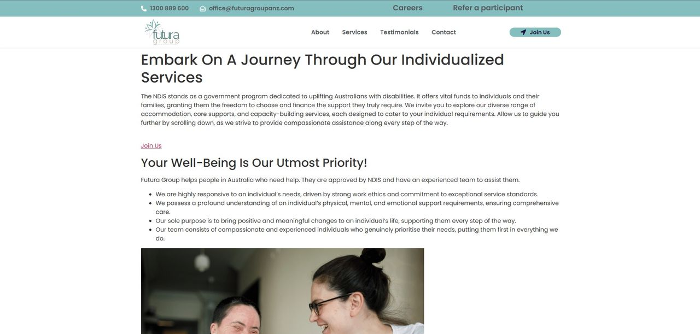
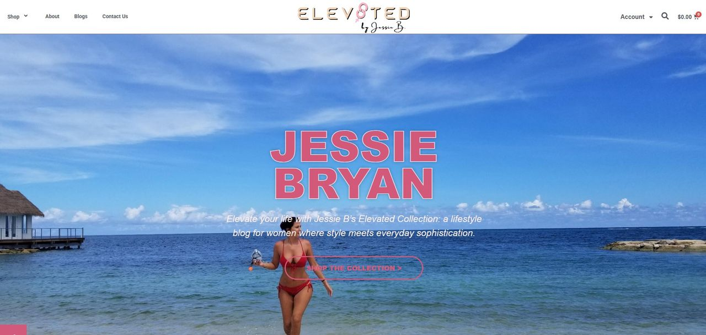
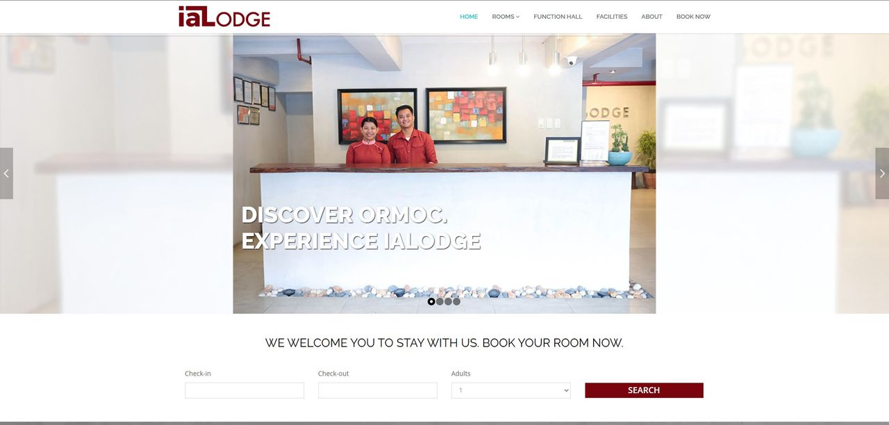
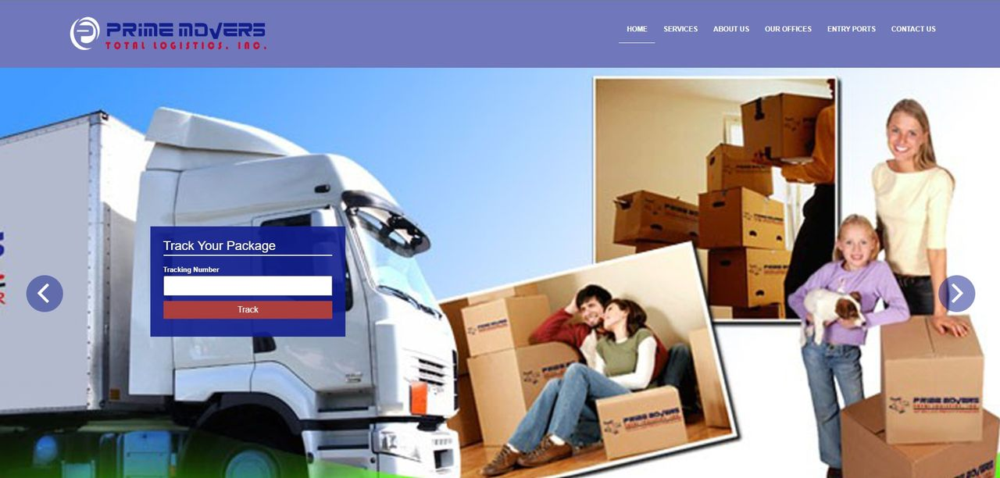
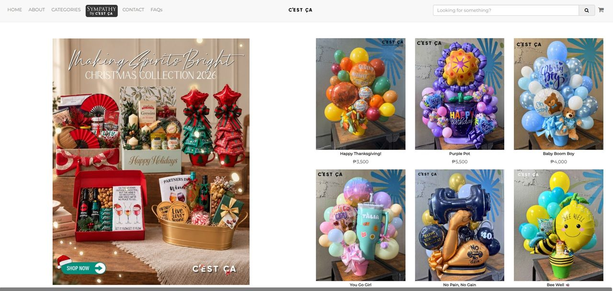

Web development
Building and maintaining websites and application interfaces.
WEB DEVELOPER · CEBU, PHILIPPINES
I'm Amaya, a Web Developer with 10 years of experience across custom web applications, WordPress development, front-end implementation, and software quality assurance.
A LITTLE ABOUT MY WORK
I work across the development process—from translating requirements into interfaces to debugging, testing, and checking the details before a release.
01 / ABOUT
My background combines hands-on web development with a strong focus on usability, reliability, and quality.
I've worked on custom websites and web applications using CodeIgniter, PHP, HTML, CSS, and JavaScript, as well as WordPress websites built with Elementor and WooCommerce.
My experience also includes front-end UI implementation, responsive layouts, debugging, functional testing, regression testing, and pre-release quality reviews.
I enjoy solving practical problems, making interfaces easier to use, and helping deliver web experiences that work as intended.
02 / CAPABILITIES
Building and maintaining websites and application interfaces.
Creating pages, layouts, and store experiences with established platforms.
Checking functionality, responsive behavior, and visual consistency.
Investigating issues, verifying fixes, and reviewing work before release.
Also listed on my resume: React, and foundational Playwright knowledge.
03 / SELECTED WORK
A selection of work from full-time roles and freelance projects. My descriptions focus on the responsibilities I handled.

A disability support services website for an Australian provider. Completed project; some current updates were made by others.
This project reflects my previous contributions. The website may have undergone updates or modifications since my involvement.

A lifestyle blog and online shop. Completed project; the live site has since been updated.
This project reflects my previous contributions. The website may have undergone updates or modifications since my involvement.

A hotel website built with CodeIgniter.
This project reflects my previous contributions. The website may have undergone updates or modifications since my involvement.

A logistics company website built with CodeIgniter.
This project reflects my previous contributions. The website may have undergone updates or modifications since my involvement.

A gifts website built on CodeIgniter, where I worked on updates to the existing site.
This project reflects my previous contributions. The website may have undergone updates or modifications since my involvement.
An internal clinic system with no public website and no screenshots. The visual is a generic illustration with no real data.
This system is internal. The illustration is conceptual and shows no real data.
Project note: This project reflects my previous contributions. The website may have undergone updates or modifications since my involvement. Screenshots, where shown, capture each site as it appears today.
Two additional freelance WooCommerce projects covered shop page development, product page creation, page building, and shop functionality. Both were discontinued when the clients gave no further instructions. I no longer have access to them, so no links or screenshots are shown.
04 / EXPERIENCE
Confidential
Advanced World Solutions, Inc.
MYT SoftDev Solutions, Inc.
Self-employed
05 / HOW I WORK
Review requirements, existing layouts, and expected behavior.
Develop pages, implement interfaces, and customize functionality.
Check responsiveness, functionality, and visual consistency.
Investigate issues, verify fixes, and review before release.
06 / CONTACT
I'd be happy to connect and discuss how my development and QA experience could support your team.